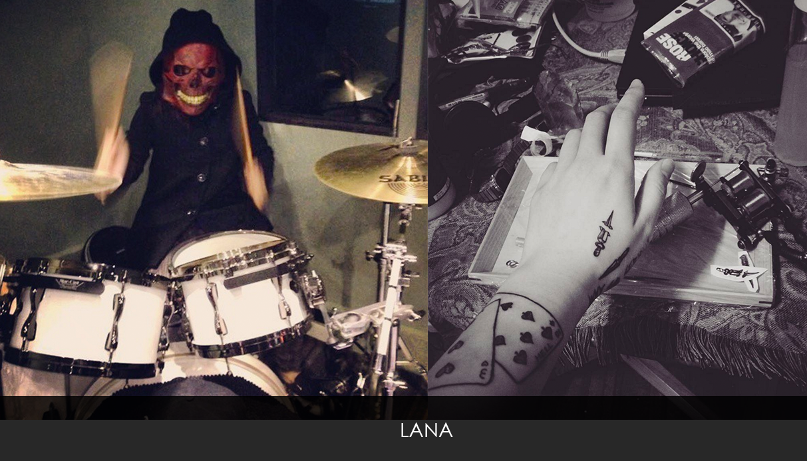

Lana, who used to work at a workshop of tattoo, is now using her own ways to get close to the tattoo artwork that shs has loved, and hoping someday she can become a real tattooist.
I've liked to draw something with pens since I was a child; now, it takes me a lot of time to conceive, amend the patterns I draw, and have them on my hands.
Lana thinks that her arms are just like portable canvas. However, she never carelessly has any inspiration on her arms. She always ponder on one pattern, whether on the final presentation or the meanings to her. In the begining, she would draw a draft, and finally make the pattern on her arms ,after a series of conceiving, amending, and pondering.
To me, every tattooist shall be responsible for not just the cuustomers, but also his own work.
By talking with Lana, I unsterdand that she's a passionate, creative, and perseverant girl, we will never do a tattoo before realizing the pattern, or never make a tattooist before being satisfied with her own, or even never help any customer before she thinks there is trust and communication between them.
She told us, people in this industry are all involved in the disreputable fame of the tattoo art in Taiwan. If tattooist are mainly focusing on making a fortune quickly, they sure can't do their utmost for their work, and the customers.
I started to know tattoo three years ago , and just like waht Johnny Depp says, "My body is a journal in a way. It's like what sailors used to do, where every tattoo meant something, a specific time in your life."

On Lana's Instagram, we can see plenty of sketches of people and animals,and she take them as some basic practices, since sketches are the expression of rationality and objectiveness. To her, creating is something different from practices, full of emotionality, personal opinions, and thoughts.
She did enjoy the moments of "painting", while her parents don't want her to engage in any art school. After one year in the university, she clearly knew it wasn'the life she wanted, even though she's still confused about what she really desired for.
Seeing the tattoo on her favorite music player, Lana has been more and more interested in tattoo, and she deems it to be a delicae kind of art. What attracts her the most is when the tattoois use those tiny needles to touch the skin, with their look concentrating, and leave timeless but sophiscated tracks on the body.
In her case, tatto is something serious on both commercial and artistic sides. Making a tattoo is just invading like piercing a ear people in korea need to get a doctor license before making a tattoo, and people in New York also have to fetch a business certificate. Nevertheless, we don't have complete legal system about tattoo for lacking the aknowledge about this culture, which causes the severe misunterstanding between customers and tattooist.
She also saw the dark side of this industry during her part-time job at the workshop, including the vicious competing and irresponsibility, leaving Lana so desperate that she almost gave up. Eventually, she realized that it is people that decide the tattoos to be good or not, not the tattoo itsself. She used to meet tattooist who were willing to spend one week to conceive a pattern and kept checking the details before having them on their customers, and it is this kind of attitude that has affected her till now.
Camus's L'Étranger is really touching to me, because the life it depicts is really close to the reality I live in.
Lana also told us, the requirements for her to choose a tattoo is being impacting and impressive. No matter how you feel about the pattern, it's gonna be the memory of your life and a reminder of "what now". These impacts and memory are not just for one case, but they are actually closer to a stack of your experience, feelings, and most importantly, yourselves. Without regularly pondering on and solving them, these things will stuck in her head and then cause big trouble.
At the end of the interview, she hoped to tell those who are into this insdustry,"Make sure you know the pattern is at least kind of important, even if you just think it's cool or nice. To tattooists, the meanings of a tattoo shall be significant, for fear that they might feel regretful easily."
What's more important is to find a trustable tattoist and do some research on his prior work and know more about each other during the talk.
Lana deeply believes that despite the fact that she might face compromise, vicious critism and so on, the industry of tattoo in Taiwan could be better as long as every tattooist do their best.